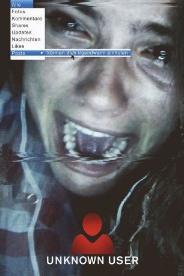

#4605 Unknown User
Alternativ: Unfriended
 
 IMDB-Wertung: 5.7 / 10
IMDB-Wertung: 5.7 / 10  Metascore: 0
Metascore: 0 
Sechs Highschool-Freunde skypen miteinander, sehen sich also ausschließlich über ihre Bildschirme. Vor genau einem Jahr beging ihre Mitschülerin Laura Barns Selbstmord, am 12. April 2013. Ein Video des Suizids gelangte ins Netz. Drei Tage vorher hatte jemand ein anderes Video gepostet, es zeigt Laura in peinlicher Situation nach einer Party. Hämische Kommentare, etwa auf Facebook, hatten nicht lange auf sich warten lassen. Jetzt, im Chat der sechs Freunde, klinkt sich ein Nutzer namens billie227 ein, den niemand aus der Clique kennt. Er will wissen, wer das demütigende Video von Laura ins Internet gestellt hat – andernfalls gibt es Tote. Und plötzlich passieren unheimliche Dinge in sozialen Netzwerken und vor Webcams…
Jahr: 2014
Dauer: 82 Minuten
FSK: 12
Land: USA Studio: Universal PicturesTonspuren: DTS - ,
Untertitel: Deutsch, Englisch,
Auflösung: 1080p (1920x1080) Größe: 7587 MB
Genre: Horror
Regisseur: Levan Gabriadze
Drehbuch: Leslye Headland
Soundtrack:
Darsteller:
- Heather Sossaman als Laura
- Matthew Bohrer als Matt
- Courtney Halverson als Val
- Shelley Hennig als Blaire
- Moses Storm als Mitch
 Will Peltz als Adam
Will Peltz als Adam Renee Olstead als Jess
Renee Olstead als Jess- Jacob Wysocki als Ken
- Mickey River als Dank Jimmy
- Cal Barnes als Rando Pauls
 Michael Herbig als Officer , uncredited
Michael Herbig als Officer , uncredited Konstantin Khabenskiy als Officer , uncredited
Konstantin Khabenskiy als Officer , uncredited- Christa Hartsock als Chatroulette Girl
- Anthony Eftimeo als Student , uncredited
- Tony Hernandez als Himself , uncredited
Datei: X:\2-Dilogie(N-Z)\Unknown User\Unknown User (2014, FSK12, 1920x1080).mkv seit 21.10.2016
Festplatte: HD Collection-2(A-Z)-3(A-M)
 Alle Filme aus Gruppe '2-Dilogie(N-Z)\Unknown User'
Alle Filme aus Gruppe '2-Dilogie(N-Z)\Unknown User'